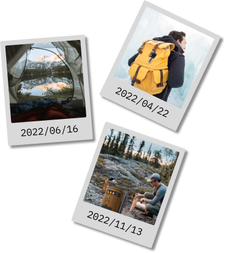

kollektion
Nordisk kraft och teknik i symbios för vilda äventyr
Vår Nordisk Wildtech Kollektion är en hyllning till äventyret och
den robusta skönheten i nordisk natur. Genom att kombinera kraften
från naturen med avancerad teknik skapar vi pålitliga följeslagare
för dina friluftsäventyr. Varje enhet, inspirerad av nordiska
rovdjur som ulven, korpen och björnen, är utformad för att erbjuda
styrka, intelligens och tillförlitlighet i de mest utmanande
miljöerna. Utforska vildmarken med tillförsikt och låt våra verktyg
förverkliga din passion för äventyr.
Ulveld
Förenar eld och teknik för äventyr i det vilda.
Ulveld är en eldstad som inte bara möjliggör matlagning i
naturen utan även genererar elektricitet för att hålla dina
enheter laddade. Denna kombination av eld och teknik erbjuder
en mångsidig lösning för friluftsliv och äventyr.
- Mobildataextender för avlägsna områden
- Integrerad GPS-säkerhetsfunktion
- Robust design för nordiska förhållanden
Korpöga
Utforska avlägsna platser med säker anslutning
Korpöga är en mobildataextender som säkerställer en stabil
anslutning även i de mest avlägsna områdena. Den innehåller
också en integrerad GPS-säkerhetsfunktion för att garantera
din trygghet under utforskningen.
- Eldstad med elgenerator och matlagningsyta
- USB- och hushållsuttag för anslutning
- Bärbar och säker design för friluftsanvändning
Björnstyrka
Kraft och pålitlighet för äventyr utan gränser
Björnstyrka, ett robust batteripack med imponerande kapacitet,
standard USB- och hushållsuttag, inbyggd LED-lampa för extra
utomhusbelysning, intelligent temperaturreglering för
enhetsskydd – din pålitliga följeslagare för äventyr i
naturen.
- Stort batteripack med imponerande kapacitet
- LED-lampa för extra belysning
- Bärbar design för ryggsäcksfäste
- Intelligent temperaturreglering för enhetsskydd
Recensioner Från vårt community

“Fantastiska teknikprodukter för friluftslivet! Jag är imponerad
av den höga kvaliteten och innovationen i varje produkt jag köpt
från dem. Deras batteripack har verkligen förlängt mina äventyr
och nätverksutökaren har hållit mig uppkopplad även på avlägsna
platser.”
Sture Svensson


"Eldstad som genererar el – vilken genialisk idé! Jag älskar hur
deras produkter inte bara gör campinglivet bekvämare utan även mer
miljövänligt. Utmärkt kundservice och snabb leverans, jag
rekommenderar dem starkt till alla friluftsälskare."
Marie Månsson

"Enastående företag med ett sortiment som verkligen förbättrar
friluftsäventyr! Deras stora batteripack har gett mig tillräckligt
med energi för flerdagars vandringar och nätverksutökaren har
varit ovärderlig"
Kalle Karlsson
“Fantastiska teknikprodukter för friluftslivet! Jag är
imponerad av den höga kvaliteten och innovationen i varje
produkt jag köpt från dem. Deras batteripack har verkligen
förlängt mina äventyr och nätverksutökaren har hållit mig
uppkopplad även på avlägsna platser.”
Sture Svensson
"Eldstad som genererar el – vilken genialisk idé! Jag älskar
hur deras produkter inte bara gör campinglivet bekvämare utan
även mer miljövänligt. Utmärkt kundservice och snabb leverans,
jag rekommenderar dem starkt till alla friluftsälskare."
Marie Månsson
"Enastående företag med ett sortiment som verkligen förbättrar
friluftsäventyr! Deras stora batteripack har gett mig
tillräckligt med energi för flerdagars vandringar och
nätverksutökaren har varit ovärderlig"
Kalle Karlsson
Pro-tech
Teknik för att omdefiniera äventyret
Pro-Tech föddes ur passionen hos en grupp vänner i Göteborg,
vägledda av en gemensam längtan efter äventyr och en djup respekt
för naturen. Deras historia började på de nordiska vidderna, där
stjärnklara nätter och naturens tystnad blev deras fristad.
Inspirerade av den fria känslan av att vara ute i det vilda, men
lika mycket av den moderna världens bekvämlighet, skapade de tre
banbrytande produkter. Dessa verktyg är inte bara enkla prylar; de
är nycklar till en värld av äventyr, utformade för att förenkla och
inspirera till en djupare förbindelse med naturen. Genom att
kombinera teknikens framsteg med passionen för vildmarken strävar
Pro-Tech efter att öppna dörrar till naturens underverk för alla
äventyrssugna själar. Deras drivkraft är att sänka trösklarna till
naturen, skapa en samexistens mellan teknik och vildmark och på så
vis göra varje steg ut i det okända till en hyllning till äventyrets
sanna natur.


Greppa äventyret

Tack för att du kom så här långt! Skriv upp dig för vårt
nyhetsbrev och få chansen att bli en av de första 100 att få en
gratis keps vid nästa köp. Få exklusiva erbjudanden och spännande
nyheter direkt i din inkorg. Skriv in din e-postadress nu och bli
en del av vårt äventyrskollektiv!